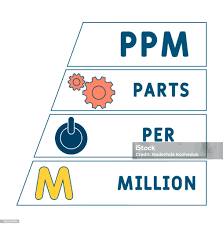

Cátalogo de Vídeos de Química - 3° Trimestre
🚀Olá! Sou um aluno do 1º ano do Ensino Médio, e para a disciplina de Pensamento Computacional, elaborei este catálogo de vídeos didáticos sobre os principais conteúdos de Química do 3º trimestre. O objetivo desta página web é ser um recurso visual e dinâmico, facilitando o estudo de tópicos essenciais como Termoquímica (abordando calor, entalpia, reações endotérmicas e exotérmicas), Cinética Química (velocidade das reações e fatores que a alteram, como catalisadores) e os conceitos básicos de Equilíbrio Químico. Cada vídeo é cuidadosamente selecionado ou produzido para transformar fórmulas e teorias complexas em exemplos claros e de fácil compreensão, com o intuito de apoiar o aprendizado e a preparação para avaliações.
Playlist de Química


Parte por milhão (ppm)
É uma unidade de concentração utilizada em química, principalmente para medir a presença de solutos em quantidades muito pequenas (traços) em uma solução ou mistura.
